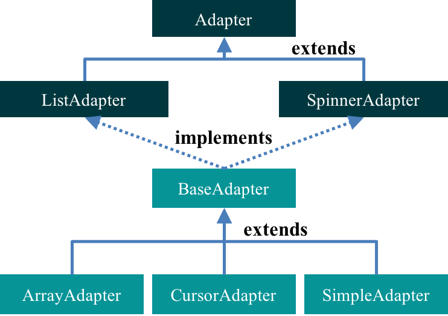
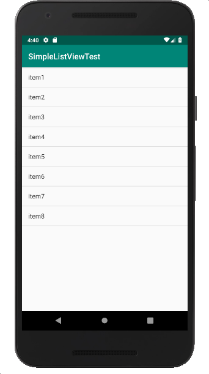

GridView는 2차원 스크롤가능한 그리드에 항목을 표시

어댑터 뷰는 표시할 항목 데이터를 직접 관리하지 않고, 어댑터라는 객체로부터 공급받습니다.
사용자가 어댑터뷰의 특정 위치의 항목을 선택하였을 때, 어댑터뷰는 선택된 항목, 항목ID, 항목뷰를 어댑터의 getItem(), getItemId(), getView() 메소드를 통해 얻어와서 이를 항목선택 이벤트 처리기에 넘겨줍니다.
요약하면, 어댑터뷰는 어댑터에 정의된 인터페이스를 바탕으로 필요한 정보를 요청하여 항목뷰를 화면에 표시하거나 선택된 항목뷰를 처리합니다.

ListView는 어댑터뷰의 대표 위젯으로서, 복수 개의 항목을 수직으로 표시
메인화면 레이아웃(예, activity_main.xml)에 ListView 위젯을 추가하고, XML 레이아웃 파일에 정의된 ListView 위젯을 Java 코드에서 참조하기 위하여 id 속성을 정의한다.
<?xml version="1.0" encoding="utf-8"?>
<LinearLayout xmlns:android="http://schemas.android.com/apk/res/android"
android:orientation="vertical"
android:layout_width="match_parent"
android:layout_height="match_parent">
<ListView
android:id="@+id/listView"
android:layout_width="match_parent"
android:layout_height="match_parent"
/>
</LinearLayout>ArrayAdapter 생성자
ArrayAdapter(Context context, int resource, int textViewResourceId, T[] objects)
resource: 항목으로 표시될 텍스트 뷰의 리소스 ID
| 리소스 ID | 설명 |
|---|---|
| android.R.layout.simple_list_item_1 | 하나의 텍스트 뷰로 구성된 레이아웃 |
| android.R.layout.simple_list_item_2 | 두 개의 텍스트 뷰로 구성된 레이아웃 |
| android.R.layout.simple_list_item_checked | 오른쪽에 체크 표시가 나타남 |
| android.R.layout.simple_list_item_single_choice | 오른쪽에 라디오 버튼이 나타남 |
| android.R.layout.simple_lsit_item_multiple_choice | 오른쪽에 체크 버튼이 나타남 |
objects: 어댑터로 공급될 데이터 원본으로 단순 배열
String 배열을 이용한 ArrayAdapter 객체 생성 예제
public class MainActivity extends AppCompatActivity {
@Override
protected void onCreate(Bundle savedInstanceState) {
super.onCreate(savedInstanceState);
setContentView(R.layout.activity_main);
// 데이터 원본 준비
String[] items = {"item1", "item2", "item3", "item4", "item5", "item6", "item7", "item8"};
//어댑터 준비 (배열 객체 이용, simple_list_item_1 리소스 사용
ArrayAdapter<String> adapt
= new ArrayAdapter<String>(
this,
android.R.layout.simple_list_item_1,
items);
}
}얻어온 ListView 객체에 생성된 어댑터 객체(예, ArrayAdapter 객체-adapt)를 setAdapter()라는 메소드를 통해서 설정한다.
public class MainActivity extends AppCompatActivity {
@Override
protected void onCreate(Bundle savedInstanceState) {
super.onCreate(savedInstanceState);
setContentView(R.layout.activity_main);
// 데이터 원본 준비
String[] items = {"item1", "item2", "item3", "item4", "item5", "item6", "item7", "item8"};
//어댑터 준비 (배열 객체 이용, simple_list_item_1 리소스 사용
ArrayAdapter<String> adapt
= new ArrayAdapter<String>(
this,
android.R.layout.simple_list_item_1,
items);
//어댑터 연결
ListView list = (ListView) findViewById(R.id.listView);
list.setAdapter(adapt);
}
}실행 결과

SimpleListViewTest 프로젝트 Github URL : https://github.com/kwanulee/Android/tree/master/examples/SimpleListViewTest
GridView는 2차원 스크롤가능한 그리드에 항목을 표시
res/layout/activity_main.xml
<?xml version="1.0" encoding="utf-8"?>
<GridView xmlns:android="http://schemas.android.com/apk/res/android"
android:id="@+id/gridview"
android:layout_width="match_parent"
android:layout_height="match_parent"
android:columnWidth="100dp"
android:numColumns="auto_fit"
android:verticalSpacing="10dp"
android:horizontalSpacing="10dp"
android:stretchMode="columnWidth"
android:gravity="center"
/>100dp: 그리드 항목 하나의 폭을 100dp로 설정
auto_fit: 열의 폭과 화면 폭을 바탕으로 자동 계산
columnWidth: 열 내부의 여백을 폭에 맞게 채움
public class MainActivity extends AppCompatActivity {
@Override
protected void onCreate(Bundle savedInstanceState) {
super.onCreate(savedInstanceState);
setContentView(R.layout.activity_main);
// 데이터 원본 준비
String[] items = {"item1", "item2", "item3", "item4", "item5", "item6", "item7", "item8"};
//어댑터 준비 (배열 객체 이용, simple_list_item_1 리소스 사용
ArrayAdapter<String> adapt
= new ArrayAdapter<String>(
this,
android.R.layout.simple_list_item_1,
items);
// id를 바탕으로 화면 레이아웃에 정의된 GridView 객체 로딩
GridView gridview = (GridView) findViewById(R.id.gridview);
// 어댑터를 GridView 객체에 연결
gridview.setAdapter(adapt);
}
}생성된 ArrayAdapter 객체를 GridView 객체에 연결
실행화면

SimpleGridViewTest 프로젝트 Github URL : https://github.com/kwanulee/Android/tree/master/examples/SimpleGridViewTest
activity_main.xml
<?xml version="1.0" encoding="utf-8"?>
<GridView xmlns:android="http://schemas.android.com/apk/res/android"
android:id="@+id/gridview"
android:layout_width="match_parent"
android:layout_height="match_parent"
android:columnWidth="100dp"
android:numColumns="auto_fit"
android:verticalSpacing="10dp"
android:horizontalSpacing="10dp"
android:stretchMode="columnWidth"
android:gravity="center"
/>그리드뷰의 항목으로 간단한 텍스트가 아닌 이미지를 사용하고자 하는 경우에는 그리드뷰의 항목으로 이미지를 공급하는 ImageAdapter를 BaseAdapter로부터 파생하여 정의한다.
public class ImageAdapter extends BaseAdapter {
private Context mContext;
public ImageAdapter(Context c) {
mContext = c;
}
public int getCount() {
return mThumbIds.length;
}
public Object getItem(int position) {
return mThumbIds[position];
}
public long getItemId(int position) {
return position;
}
// create a new ImageView for each item referenced by the Adapter
public View getView(int position, View convertView, ViewGroup parent) {
ImageView imageView;
if (convertView == null) {
// if it's not recycled, initialize some attributes
imageView = new ImageView(mContext);
imageView.setLayoutParams(new GridView.LayoutParams(100, 100));
imageView.setScaleType(ImageView.ScaleType.CENTER_CROP);
imageView.setPadding(8, 8, 8, 8);
} else {
imageView = (ImageView) convertView;
}
imageView.setImageResource(mThumbIds[position]);
return imageView;
}
// references to our images
private Integer[] mThumbIds = {
R.drawable.sample_2, R.drawable.sample_3,
R.drawable.sample_4, R.drawable.sample_5,
R.drawable.sample_6, R.drawable.sample_7,
R.drawable.sample_0, R.drawable.sample_1,
R.drawable.sample_2, R.drawable.sample_3,
R.drawable.sample_4, R.drawable.sample_5,
R.drawable.sample_6, R.drawable.sample_7,
R.drawable.sample_0, R.drawable.sample_1,
R.drawable.sample_2, R.drawable.sample_3,
R.drawable.sample_4, R.drawable.sample_5,
R.drawable.sample_6, R.drawable.sample_7
};
}그리드뷰 설정의 마지막 단계는 ImageAdapter 객체를 생성하고 이를 GridView 객체에 연결하는 것
public class MainActivity extends AppCompatActivity {
protected void onCreate(Bundle savedInstanceState) {
super.onCreate(savedInstanceState);
setContentView(R.layout.activity_main);
// id를 바탕으로 화면 레이아웃에 정의된 GridView 객체 로딩
GridView gridview = (GridView) findViewById(R.id.gridview);
// ImageAdapter 객체를 생성하고 GridView 객체에 연결
gridview.setAdapter(new ImageAdapter(this));
}
}AdapterView의 항목이 클릭될 때, 호출되는 callback method의 인터페이스
public static interface AdapterView.OnItemClickListener {
abstract void onItemClick(AdapterView<?> parent,
View view,
int position,
long id);
}| 파라미터 | 설명 |
|---|---|
| parent | 클릭 이벤트가 발생된 AdapterView |
| view | 실제 클릭 된 AdapterView안의 View |
| position | 어댑터 내에서 클릭 된 항목/뷰의 위치 |
| id | 클릭 된 항목의 id |
앞의 ImageGridViewTest 프로젝트 예제에서 항목 클릭 이벤트 처리 코드 추가
public class MainActivity extends AppCompatActivity {
protected void onCreate(Bundle savedInstanceState) {
super.onCreate(savedInstanceState);
setContentView(R.layout.activity_main);
// id를 바탕으로 화면 레이아웃에 정의된 GridView 객체 로딩
GridView gridview = (GridView) findViewById(R.id.gridview);
// ImageAdapter 객체를 생성하고 GridView 객체에 연결
gridview.setAdapter(new ImageAdapter(this));
// 항목 클릭 이벤트 처리
gridview.setOnItemClickListener(new AdapterView.OnItemClickListener() {
public void onItemClick(AdapterView<?> parent, View v,
int position, long id) {
Toast.makeText(MainActivity.this,
"" + (position+1)+ "번째 선택",
Toast.LENGTH_SHORT).show();
}
});
}
}실행화면

ImageGridViewTest 프로젝트 Github URL : https://github.com/kwanulee/Android/tree/master/examples/ImageGridViewTest
어댑터 뷰의 항목 하나는 단순한 문자열 이나 이미지 뿐만 아니라, 다수의 문자열이나 이미지를 포함하는 임의의 뷰가 될 수 있습니다.

커스텀 항목뷰 설정 절차
다음과 같은 모양의 커스텀 항목 뷰를 정의

XML 코드
<?xml version="1.0" encoding="utf-8"?>
<LinearLayout xmlns:android="http://schemas.android.com/apk/res/android"
android:layout_width="match_parent"
android:layout_height="wrap_content"
android:orientation="horizontal"
>
<ImageView
android:id="@+id/iconItem"
android:layout_width="@dimen/icon_size"
android:layout_height="@dimen/icon_size"
android:scaleType="centerInside"
android:padding="@dimen/icon_padding"
android:layout_gravity="center_vertical"
android:layout_weight="1"
android:src="@drawable/sample_0"
/>
<LinearLayout
android:orientation="vertical"
android:layout_width="wrap_content"
android:layout_height="wrap_content"
android:layout_weight="2">
<TextView
android:id="@+id/textItem1"
android:layout_width="wrap_content"
android:layout_height="wrap_content"
android:textColor="@color/colorAccent"
android:textSize="@dimen/list_item_text_size1"
android:padding="@dimen/list_item_padding"
android:hint="Name"
/>
<TextView
android:id="@+id/textItem2"
android:layout_width="wrap_content"
android:layout_height="wrap_content"
android:textColor="@color/colorPrimary"
android:textSize="@dimen/list_item_text_size2"
android:padding="@dimen/list_item_padding"
android:hint="Age"
/>
</LinearLayout>
</LinearLayout>위의 item.xml 코드 내에서 ImageView 크기 및 TextView의 textSize 및 padding 속성 값은 dimension 리소스에 정의되어 있음
<resources>
<!-- Default screen margins, per the Android Design guidelines. -->
<dimen name="activity_horizontal_margin">16dp</dimen>
<dimen name="activity_vertical_margin">16dp</dimen>
<dimen name="list_item_text_size1">20dp</dimen>
<dimen name="list_item_text_size2">16dp</dimen>
<dimen name="list_item_padding">4dp</dimen>
<dimen name="icon_size">60dp</dimen>
<dimen name="icon_padding">8dp</dimen>
</resources>항목뷰에 표시할 데이터를 정의한 MyItem 클래스 정의
public class MyItem {
int mIcon; // image resource
String nName; // text
String nAge; // text
MyItem(int aIcon, String aName, String aAge) {
mIcon = aIcon;
nName = aName;
nAge = aAge;
}
}MyAdapter 클래스 코드
public class MyAdapter extends BaseAdapter {
private Context mContext;
private int mResource;
private ArrayList<MyItem> mItems = new ArrayList<MyItem>();
public MyAdapter(Context context, int resource, ArrayList<MyItem> items) {
mContext = context;
mItems = items;
mResource = resource;
}
// MyAdapter 클래스가 관리하는 항목의 총 개수를 반환
@Override
public int getCount() {
return mItems.size();
}
// MyAdapter 클래스가 관리하는 항목의 중에서 position 위치의 항목을 반환
@Override
public Object getItem(int position) {
return mItems.get(position);
}
// 항목 id를 항목의 위치로 간주함
@Override
public long getItemId(int position) {
return position;
}
// position 위치의 항목에 해당되는 항목뷰를 반환하는 것이 목적임
@Override
public View getView(int position, View convertView, ViewGroup parent) {
if (convertView == null) { // 해당 항목 뷰가 이전에 생성된 적이 없는 경우
LayoutInflater inflater = (LayoutInflater) mContext.getSystemService(Context.LAYOUT_INFLATER_SERVICE);
// 항목 뷰를 정의한 xml 리소스(여기서는 mResource 값)으로부터 항목 뷰 객체를 메모리로 로드
convertView = inflater.inflate(mResource, parent,false);
}
// convertView 변수로 참조되는 항목 뷰 객체내에 포함된 이미지뷰 객체를 id를 통해 얻어옴
ImageView icon = (ImageView) convertView.findViewById(R.id.iconItem);
// 어댑터가 관리하는 항목 데이터 중에서 position 위치의 항목의 이미지 리소스를 이미지뷰 객체에 설정
icon.setImageResource(mItems.get(position).mIcon);
// convertView 변수로 참조되는 항목 뷰 객체내에 포함된 텍스트뷰 객체를 id를 통해 얻어옴
TextView name = (TextView) convertView.findViewById(R.id.textItem1);
// 어댑터가 관리하는 항목 데이터 중에서 position 위치의 항목의 문자열을 설정 텍스트뷰 객체에 설정
name.setText(mItems.get(position).nName);
// Set Text 02
TextView age = (TextView) convertView.findViewById(R.id.textItem2);
age.setText(mItems.get(position).nAge);
return convertView;
}
}MainActivity.java 파일에서 다음 역할의 코드를 추가한다.
[주의] 연습1의 세번째 스탭에서 처럼 app>res>drawable 하위에 이름이 sample_0에서 sample_7까지인 8개의 이미지 파일을 추가되어 있어야 함
public class MainActivity extends AppCompatActivity {
static MyAdapter adapter;
@Override
protected void onCreate(Bundle savedInstanceState) {
super.onCreate(savedInstanceState);
setContentView(R.layout.activity_main);
// 데이터 원본 준비
ArrayList<MyItem> data = new ArrayList<MyItem>();
data.add(new MyItem(R.drawable.sample_0, "Bella", "1"));
data.add(new MyItem(R.drawable.sample_1, "Charlie", "2"));
data.add(new MyItem(R.drawable.sample_2, "Daisy", "1.5"));
data.add(new MyItem(R.drawable.sample_3, "Duke", "1"));
data.add(new MyItem(R.drawable.sample_4, "Max", "2"));
data.add(new MyItem(R.drawable.sample_5, "Happy", "4"));
data.add(new MyItem(R.drawable.sample_6, "Luna", "3"));
data.add(new MyItem(R.drawable.sample_7, "Bob", "2"));
//어댑터 생성
adapter = new MyAdapter(this, R.layout.item, data);
//어댑터 연결
ListView listView = (ListView)findViewById(R.id.listView);
listView.setAdapter(adapter);
listView.setOnItemClickListener(new AdapterView.OnItemClickListener() {
public void onItemClick(AdapterView<?> parent, View vClicked,
int position, long id) {
// String name = (String) ((TextView)vClicked.findViewById(R.id.textItem1)).getText();
String name = ((MyItem)adapter.getItem(position)).nName;
Toast.makeText(MainActivity.this, name + " selected",
Toast.LENGTH_SHORT).show();
}
});
}
}실행 결과

CustomItemViewTest 프로젝트 Github URL : https://github.com/kwanulee/Android/tree/master/examples/CustomItemViewTest